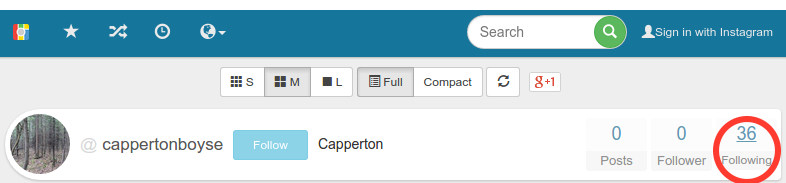

@obilodeau
and special thanks to Thomas Dupuy (@nyx__o)
.
Linux/Moose endangered or extinct?
An update on this atypical embedded Linux botnet
by Olivier Bilodeau
$ apropos
Statically linked stripped ELF challenges
Moose DNA (description)
Moose Herding (the Operation)
A Strange Animal
Latest Developments
$ whoami
Malware Researcher at ESET
Infosec lecturer at ETS University in Montreal
Previously
infosec developer, network admin, linux system admin
Co-founder Montrehack (hands-on security workshops)
Founder NorthSec Hacker Jeopardy
Static/stripped ELF primer
No imports (library calls) present
All the code bundled together down to kernel syscall
Disassembler (if available for arch) doesn’t help much
Linux/Moose binary in IDA

printf family
Ecosystem makes it worst [for reversers]
GCC and GNU libc is always changing so compiled binaries always change
Little IDA FLIRT signatures available (if any)
µClibc, eglibc, glibc, musl, …
A Failed Attempt
Map syscalls with IDA script
But libc is too big it is still too much
Better Solution
Reproduce environment (arch, libc/compiler versions)
Build libraries w/ symbols under same conditions
Use bindiff to map library functions
Focus on malware code
Moose DNA
aka Malware description
Hang tight, this is a recap
Linux/Moose…
Named after the string "elan" present in the malware executable
Elan is French for

The Lotus Elan

Elán
The Slovak rock band (from 1969 and still active)
Network capabilities
Pivot through firewalls
Home-made NAT traversal
Custom-made Proxy service
only available to a set of whitelisted IP addresses
Remotely configured generic network sniffer
DNS Hijacking
Worm-like behavior
Tries to replicate via aggressive scanning
Will dedicate more resources to scan near current external IP
Will also scan on LAN interfaces
Will not reinfect an infected device
Can replicate across architectures
C&C is made aware of new compromises
Compromise Protocol

Anti-Analysis
Statically linked binary stripped of its debugging symbols
Hard to reproduce environment required for malware to operate
Misleading strings (getcool.com)
Moose Herding
The Malware Operation
Via C&C Configuration
Network sniffer was used to steal HTTP Cookies
Twitter:
twll,twidFacebook:
c_userInstagram:
ds_user_idGoogle:
SAPISID,APISIDGoogle Play / Android:
LAY_ACTIVE_ACCOUNTYoutube:
LOGIN_INFO
Via Proxy Usage Analysis
Nature of traffic
Protocol
Targeted social networks
75%+ HTTPS but…
An Example

An Example (cont.)

An Example (cont.)
An Example (cont.)
Anti-Tracking
Whitelist means we can’t use the proxy service to evaluate malware population
Blind because of HTTPS enforced on social networks
DNS Hijacking’s Rogue DNS servers never revealed
A Strange Animal
Different focus
not in the DDoS or bitcoin mining business
no x86 variant found
controlled by a single group of actors
Missing "features"
No persistence mechanism
No shell access for operators
Thought big, realized little?
In social network fraud, network sniffer irrelevant
DNS Hijacking possible but only for few devices
No ad fraud, spam, DDoS, etc.
Latest Developments
Whitepaper Impact
Few weeks after the publication the C&C servers went dark
After a reboot, all affected devices should be cleaned
But victims compromised via weak credentials, so they can always reinfect
Alive or dead?

Alive or dead? (cont.)
On the lookout for Moose v2
Looked at over 150 new samples targeting embedded Linux platforms
Linux/Aidra, Linux/Dofloo (AES.DDoS), Linux/DNSAmp (Mr.Black), Linux.Gafgyt and Linux/Tsunami
Still no Moose update…
Yay! except…
Moose level-up
Update
New sample this Saturday
New proxy service port (20012)
New C&C selection algorithm
Lots of differences
Still under scrutiny

Conclusion
Embedded malware
Not yet complex
Tools and processes need to catch up
a low hanging fruit
Prevention simple
Questions?
Thank you!